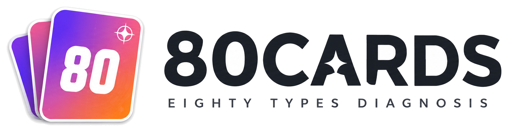
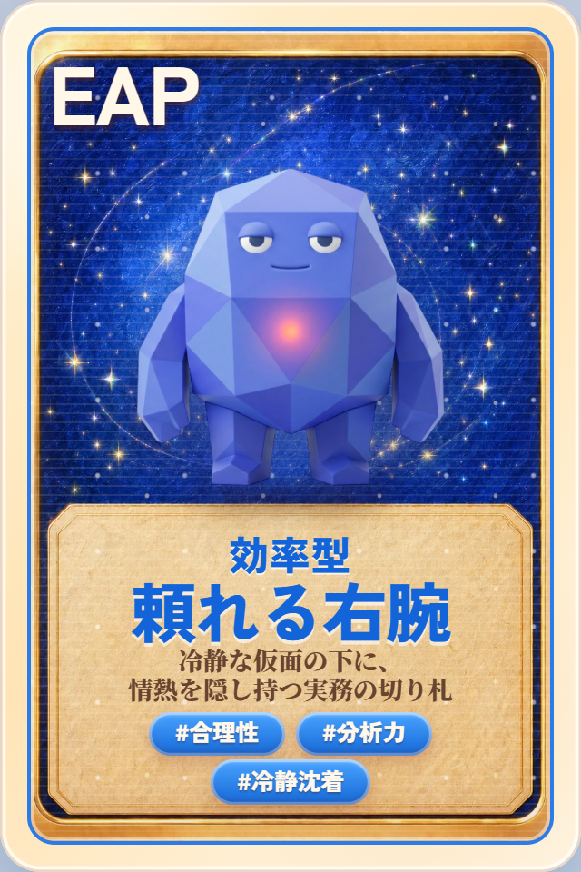
YOUR RESULT
「冷静な仮面の下に、情熱を隠し持つ実務の切り札」
効率型頼れる右腕は、冷静かつ慎重な性格と明るくポジティブな性格が同居する珍しい類型です。これは通常、相反する特徴が同時に現れることが少ないですが、この類型では両方の性格が共存します。そのため、普段は冷静で慎重な性格なのですが、時折明るくポジティブな性格に切り替わり、テンションが高くなる日（時間）があります。そのため、他の類型と比較すると、テンションの上下幅が大きい類型と言えます。効率型頼れる右腕は、自分の行為のメリット・デメリットをよく分析し、物事を処理する際に最も効率的な方法・経路を選ぶ傾向が強いです。このような特徴は、ビジネスでも高い評価を受けることがあります。
論理の矛盾を一閃で断つ、
冷静なる分析の刃
AD
社交と没頭を行き来する、
こだわりの二刀流
PA
走りながら考え、
考えながら結果を出す突破者
PD
エンジニア全般 / 事務系
ITエンジニア (インフラ、社内SEなどを含む): 論理的思考力と効率性を活かせる。効率的なシステム構築や運用方法を常に模索し、改善していくことにやりがいを感じやすい。 事務職: 正確性と効率性を活かせる。コツコツと業務をこなし、正確に処理することが得意。ルーティンワークを効率化し、生産性を高めることが得意。 施工管理: 効率性を重視する気質を活かして、現場業務の改善を提案できる。工程管理や資材調達などを効率化し、コスト削減に貢献できる可能性がある。
◎個人で完結する作業に向いています
△非効率な作業を強制されるのがとても苦手です
◎適度な距離感を保てる社風との相性が良いです
△社風が固まりすぎている組織とは合いません
◎理解してくれる上司との相性が良いです
△寛容性の乏しい上司との相性は悪いです
◎自分で考えて動ける部下との相性が良いです
△受け身の部下との相性が悪いです
◎専門職として自由に働くことに向いています
△厳格なルールの下で働くのは相性が悪いです
80CARDSは「行動スタイル × 性格の基本軸 × 補助軸」の3要素で、あなたを 80タイプ に分類します。
PPチームの太陽場を明るくする人
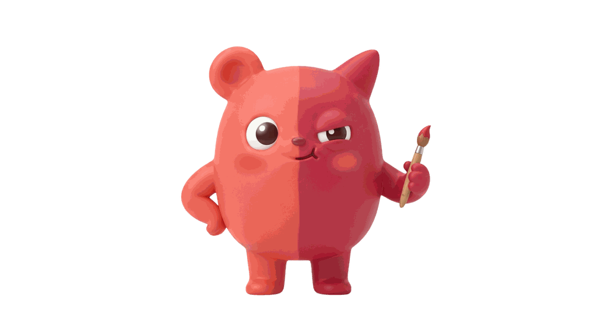
PA二面性の魔術師社交と没頭の両立
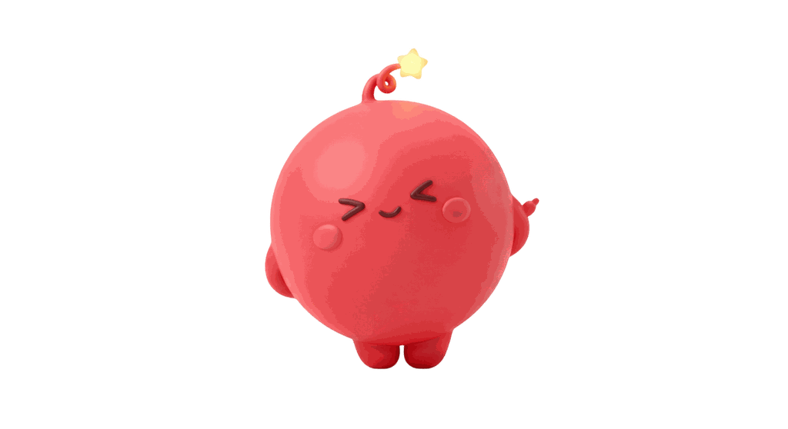
PI愛されの天才人をつなぐ才能
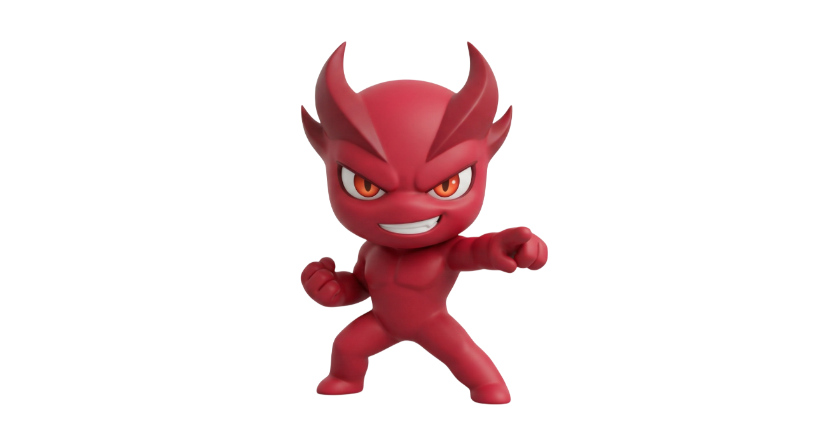
PD突破のカリスマ走って結果を出す
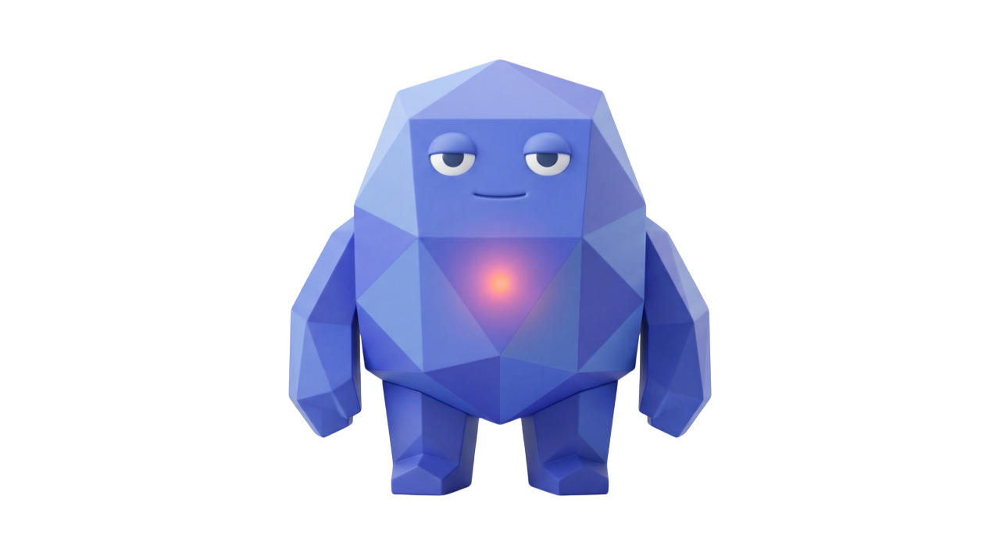
AP頼れる右腕冷静と情熱の両立
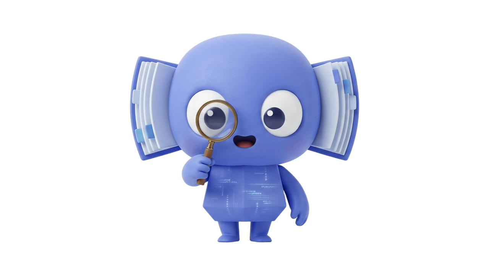
AA知の番人深掘りする探究者
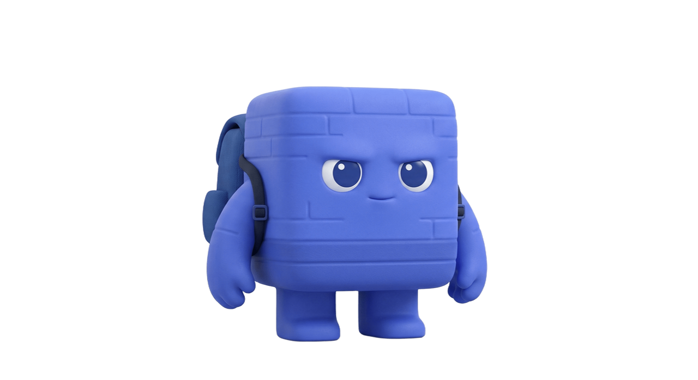
AI継続の鬼静かに積み上げる人
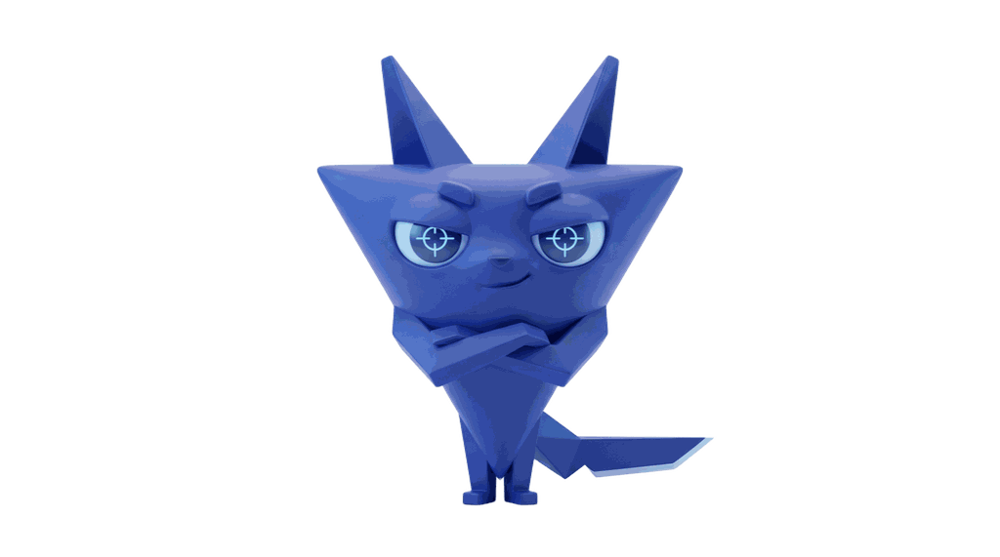
AD氷の頭脳矛盾を断つ分析家
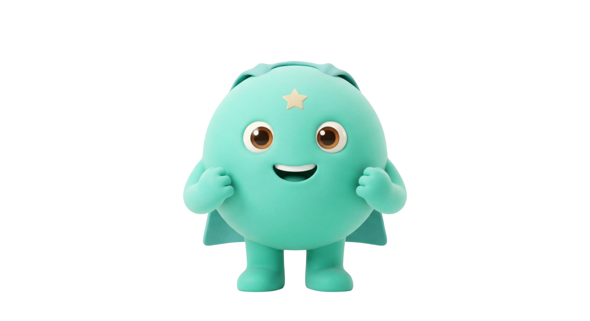
IP助っ人ヒーロー何でもこなす万能
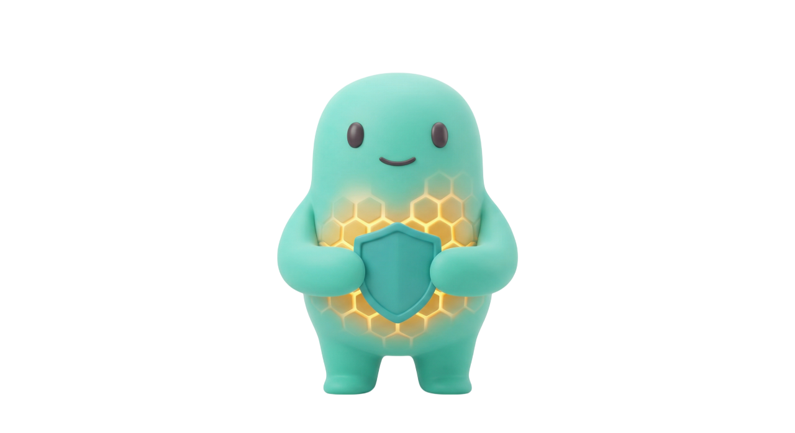
IA隠れ実力者静かに支える人
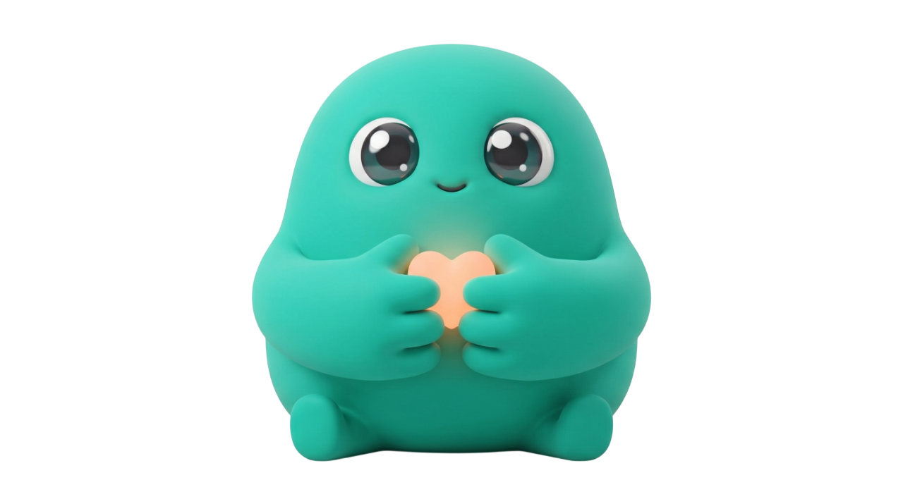
II共感マスター痛みに気づく才能
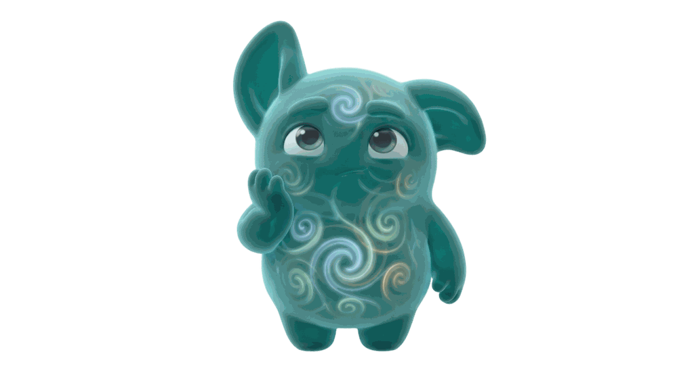
ID深掘りマニア本質を考え抜く人
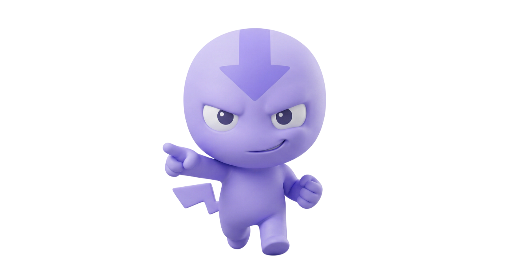
DI即決エンジン即断即決の行動者
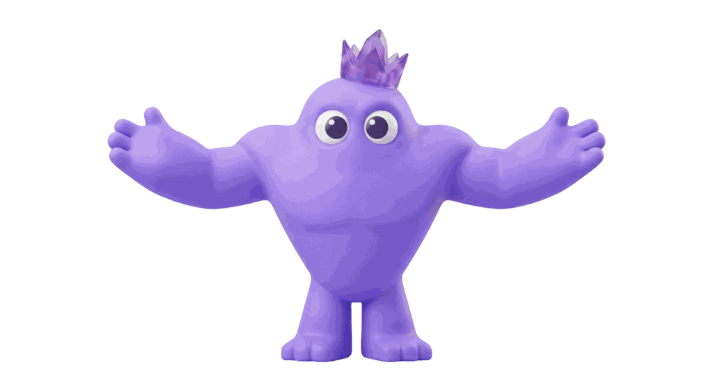
DP大将気質決断で引っ張る人
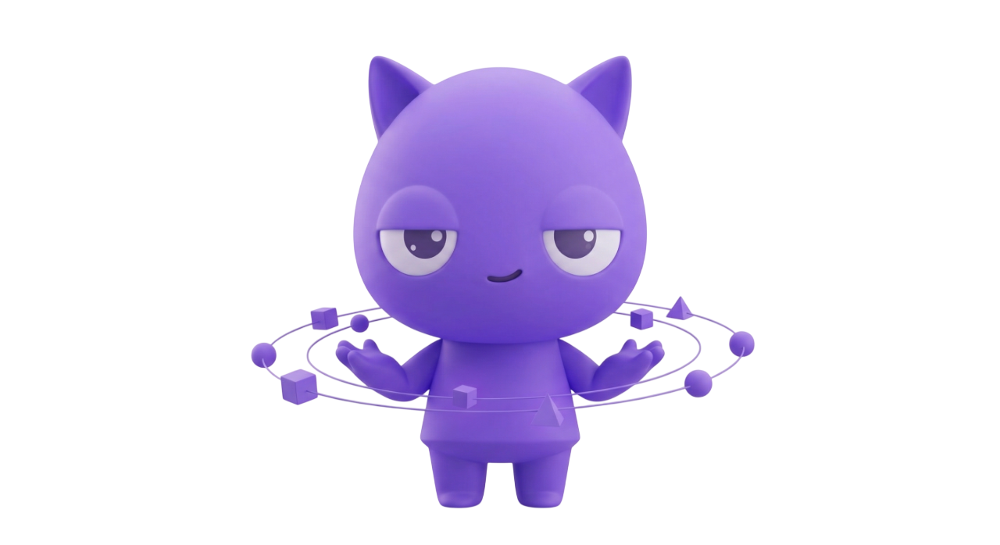
DA静かな司令塔仕組みを創る頭脳
DDゲームチェンジャールールを書き換える
向いている職種はわかっても、実際に「自分の経歴で狙えるか」「どんな社風なら合うか」は人によって変わります。80CARDSの結果をもとに、あなたに合う仕事選びの方向性を確認できます。